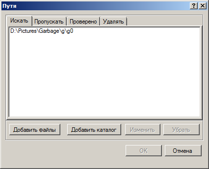

Окно путей
Окно путей можно вызвать либо из главного окна программы при помощи кнопки Пути

либо выбрав пункт Поиск - Пути в главном меню. Окно путей имеет следующий вид:
В нем можно редактировать списки каталогов и файлов, которые используются в качестве параметров при поиске. Существует четыре типа путей: те, которые нужно искать, пропускать, уже ранее проверенные, а также рекомендуемые для удаления. Подробнее смысл каждого из этих типов будет описан чуть ниже, а сейчас остановимся на том как их можно редактировать:
Добавлять файлы можно при помощи кнопки Добавить файлы. При этом откроется стандартный каталог выбора файлов, в котором можно выбрать один или несколько файлов. Которые затем добавятся в текущий список. Также файлы можно добавлять путем перетаскивания их в это окно мышью.
Аналогично для добавления нового каталога к списку нужно нажать кнопку Добавить каталог и выбрать в открывшемся диалоге нужный каталог. Также каталоги можно добавлять путем перетаскивания их в это окно мышью.
Вы можете изменить ранее добавленный путь при помощи кнопки Изменить, либо при помощи двойного щелчка мыши по нему.
Удаление путей осуществляется при помощи кнопки Удалить.
Для редактирования путей также можно воспользоваться горячими клавишами:
Delete - удаление текущего пути.
Control-C - копирование текущего пути в буфер обмена.
Control-V - копирование пути из буфера обмена.
Control-X - удаление текущего пути, с копированием его в буфер обмена.
Отметим, что каталоги и пути к файлам одного типа не могут быть вложенными друг в друга. Теперь подробнее рассмотрим, за что отвечают каждый тип путей.
Пути поиска
Самыми важными и часто используемыми путями являются пути поиска. Они располагаются на первой закладке Искать окна редактирования путей. Чаще всего задаются пути, где нужно осуществлять поиск изображений. По умолчанию картинки ищутся так же и во всех подкаталогах, но пользователь может изменить соответствующий параметр Поиск - Искать в подкаталогах в настройках поиска. Возможно также задание отдельных файлов, что целесообразно тогда, например, когда нужно выяснить: уникальна ли данная конкретная картинка или нет? Отметим также наличие в настройках поиска параметра Проверять - Сравнивать картинки из одного пути друг с другом.
Пути пропуска
Иногда складывается ситуация, когда по тем или иным причинам необходимо игнорировать при поиске отдельные вложенные каталоги или файлы. Для этого и служат пути, которые задаются на закладке Пропускать. Отметим, что пути пропуска имеют приоритет по отношению к путям поиска, потому если путь задан в обоих списках, то поиск в нем осуществляться не будет.
Проверенные пути
Если вы ранее осуществляли поиск в заданном каталоге, то нецелесообразно повторно сравнивать картинки между собой, а также проверять на дефекты. Для того, чтобы не делать это в дальнейшем, и служат пути, которые задаются на закладке Проверено. Грамотная настройка этих путей может значительно сократить время поиска, например в случае, когда мы сравниваем новый каталог с уже ранее проверенными.
Пути для удаления
Программа AntiDupl.NET генерирует подсказки для пользователя. Она автоматически определяет худшее изображение из пары дубликатов. Достаточно часто картинки полностью идентичны, а потому выбор худшего изображения из пары фактически случаен. Для того, чтобы исключить эту неопределенность и служат пути, которые задаются на закладке Удалять. Если программе встретятся две похожие картинки, то она предпочтет удалить ту, которая расположена в путях для удаления. Если же картинка с лучшим качеством окажется в каталоге для удаления, то программа предложит перемеcтить ее оттуда.
Замечание: В большинстве случаев пользователю достаточно задать один единственный каталог поиска. В таком случае можно включить параметр Поиск - Один путь поиска в Главном меню, и тогда будет показываться упрощенная версия диалога (как в предыдущих версиях AntiDupl).